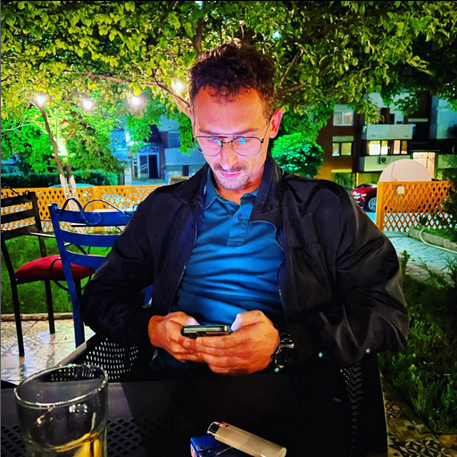

Korab Blakaj, lindur më 1989 në Prishtinë, Kosovë.
Shkollën fillore e përfundoi në Prishtinë në shkollën fillore "Iliria".
Shkollën e mesme e përfundoi në Prishtinë në shkollën e mesme "Xhevdet Doda".
Fakultetin e përfundoi në Universitetin e Prishtinës në degën "Gjuhë dhe Letërsi Angleze" .
Aktualisht vijon studimet master në kolegjin AAB AAB.
Punon në arsim si mësimdhënës i gjuhës angleze në shkollë publike dhe
private .
Adresa ime është:
Rruga C, Mati 1